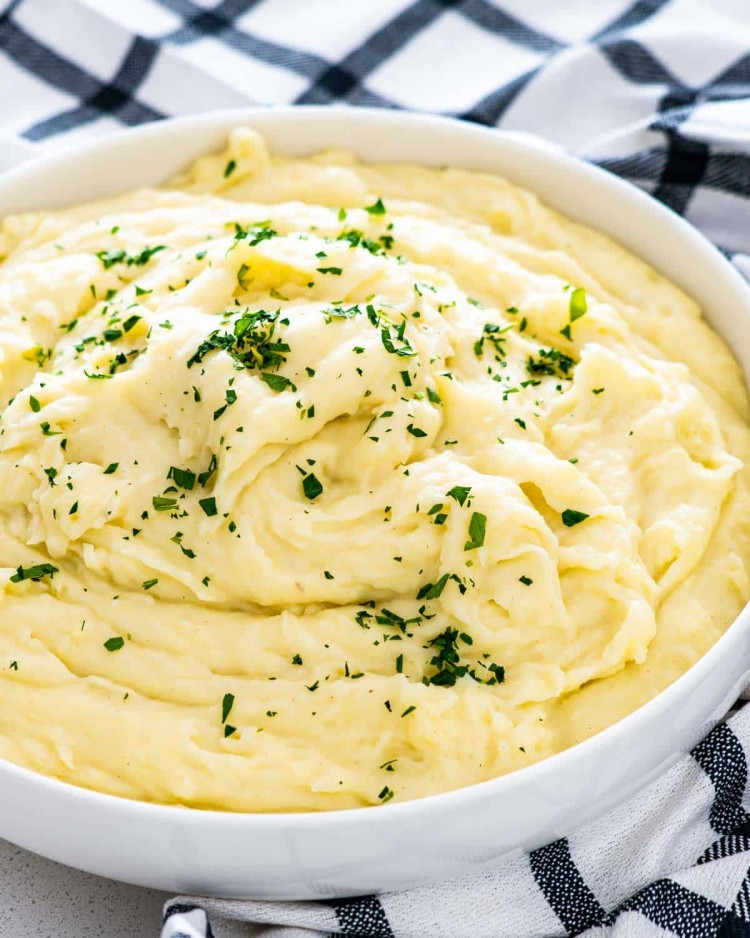

Mashed Potatoes

Description
Mashed potatoes are a great side for many dishes.
They compliment meat well and are extremely
easy, cheap, and quick to make. Good mashed potatoes make a meal!
Ingredients
- 4 Pounds of Yukon Gold Potatoes
- Chives
- 3/4ths Cup of Milk (Or Cream)
- Salt/Pepper
Steps
- Prep the potatoes. Set up a large pot of cold water
and put the potatoes in. Let boil for 30 minutes (or until soft).
- When potatoes are soft, drain water. Put potatoes in a large bowl
and mash until half done, then add milk.
- Mash until smooth. Add salt/pepper to taste and finish with chives on top.